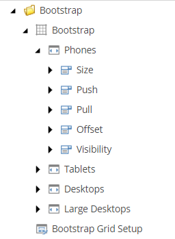

Create a custom grid
Learn how to create grid theme, definition item, and setup item.
By default, SXA comes with Bootstrap 5, but you can add your own custom CSS framework.
Grid systems are stored as a feature in Sitecore and include:
The grid theme – includes the CSS file with all grid classes.
The grid definition item – includes all grid-system specific items (the devices and their classes).
The grid setup item – the scaffolding item to include the grid in the drop-down list of the site creation wizard.

Your custom grid must have a grid theme assigned. SXA comes with a base grid theme that contains scripts and styles. You can use this base theme for your custom grid theme.
To create a grid theme:
Navigate to sitecore/Media Library/Feature and create a new folder for your grid. The default grids are saved in the Experience Accelerator folder (sitecore/Media Library/Feature/Experience Accelerator). Because SXA overwrites the standard SXA sections with SXA updates, we recommend that you create a separate folder for your grids.
Right-click the new folder and click Insert from template.
In the Insert from template dialog box, navigate to sitecore/templates/Foundation/Experience Accelerator/Grid/ and click Grid Theme.
Right-click the new grid theme and click Insert, Styles. Upload your CSS file here.
Your custom theme needs a grid definition item that includes all grid-system specific items (the devices and their classes).
To create the grid definition item:
Navigate to sitecore/System/settings/Feature/ and create a new folder for your grid. The default grids are saved in the Experience Accelerator folder (sitecore/Media Library/Feature/Experience Accelerator). Because SXA overwrites the standard SXA sections with SXA updates, we recommend that you create a separate folder for your grids.
Right-click the new folder and click Insert from template.
In the Insert from template dialog box, navigate to /sitecore/templates/Foundation/Experience Accelerator/Grid/ and click Grid Definition.
Fill in the following fields:
Name - The name of the grid system as you want it to display in the site creation wizard.
Rendering parameters field type - Determines the way the grid parameters are rendered. If you do not want to customize, use the default field renderer:
Sitecore.XA.Foundation.Grid.Fields.FieldRenderers.GridRenderingParametersFieldRenderer, Sitecore.XA.Foundation.GridDefault component layout - Sets the default column size for renderings that you drag on the page.
Grid theme - Links to the theme used for the grid.
Grid field parser type - Determines the parser type to parse the grid fields. If you do not need customization, use the default:
Sitecore.XA.Foundation.Grid.Parser.GridFieldParser,Sitecore.XA.Foundation.GridGrid body view path - Path to your cshtml file that defines the body layout of a page. You must include all necessary placeholders such as header, main, and footer.
To add the new grid as one of the grid options in the site creation wizard, you must add the grid setup.
To add the grid setup:
Right-click the new grid and click Insert from template.
In the Insert from template dialog box, navigate to sitecore/Templates/Foundation/Experience Accelerator/Scaffolding/Roots and click Grid Setup.
Fill in the following fields:
Name - The name of the grid system as you want it to display in the site creation wizard.
Dependencies - Specify the order to install the modules.
Grid Definition - Refers to the grid definition item. For example, for the custom grid in this example: Settings/Feature/<My custom grid>/<My custom grid definition>
You can now select your custom grid on the in the Grid mapping field of the site settings.